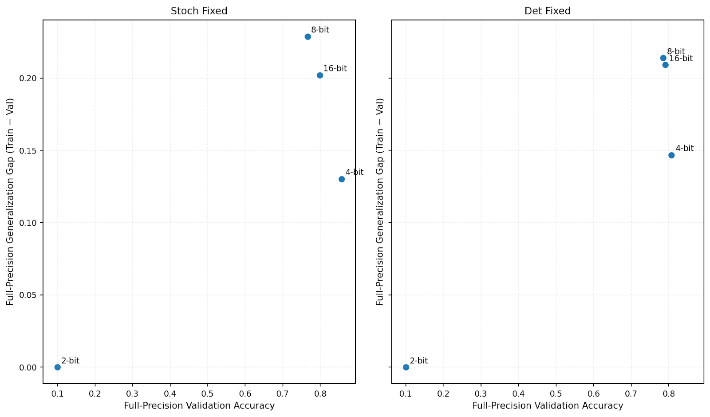
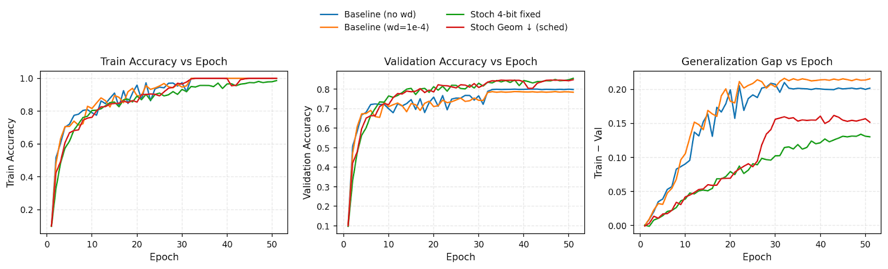

Methods
Quantization is applied at the weight level using a straight-through estimator (STE). During the forward pass, weights are mapped to a discrete grid determined by the current bitwidth, while gradients flow to the underlying full-precision parameters. We experiment with several epoch-dependent bitwidth schedules, including linear schedules, where transitions between bitwidths occur at evenly spaced epochs, and geometric schedules, where each successive transition occupies roughly half the remaining training budget (for example, epochs allocated in ratios 1/2, 1/4, 1/8, …). These schedules are instantiated in both forward (increasing precision) and backward (decreasing precision) directions. We also implement a cosine schedule that smoothly oscillates between (4→16→4) bitwidths. We run experiments for every schedule chosen twice: once with stochastic and deterministic rounding.
We use a standard asymmetric uniform quantizer where the b-bit quantized value is obtained by:
q = clip( ⌊x / scale + zp⌉, qmin, qmax )
where q
min = 0, q
max = 2
b − 1, scale = (x
max − x
min) / (q
max − q
min), and zp = q
min − x
min / scale, with x
min and x
max being the min and max values contained within the unquantized tensor. Deterministic rounding uses ⌊·⌉, while stochastic rounding samples an integer above or below according to the fractional part of the prequantized value.
To stabilize activation quantization across training, each layer maintains an exponential moving average (EMA) of activation minima and maxima, updated per batch as:
runningmin = (1 − α) runningmin + α · min(xbatch)
runningmax = (1 − α) runningmax + α · max(xbatch)
During the forward pass, activations are quantized using running average statistics instead of instantaneous tensor min and max.
Results
Baseline
| run |
train_final |
val_final |
gap_final |
|
ResNet-32 (FP, No WD)
|
1.000 |
0.798 |
0.202 |
|
ResNet-32 (FP, WD 1e-4)
|
1.000 |
0.784 |
0.216 |
Table 1.
Results of two FP (full-precision) ResNet-32 baselines on CIFAR-10:
ResNet-32 (FP, No WD) trained without explicit regularization, and
ResNet-32 (FP, WD 1e-4) trained with AdamW-style L2 weight decay, WD.
Both baselines in
Table 1 reach perfect training accuracy, indicating substantial overparameterization. Generalization, however, remains limited: the no-WD model shows a 0.202 generalization gap, and the WD model has a slightly larger gap of 0.216. This suggests that, in this setting, WD does not clearly improve generalization and provides a useful baseline for evaluating whether quantization-induced noise behaves as an effective regularizer.
Fixed Quantization
To more systematically compare rounding schemes, we consider pairs of deterministic and stochastic experiments for each fixed bitwidth b ∈ {2,4,8,16}.
Generalization Gap Across Fixed Bit Quantization

Figure 1.
Full-precision validation accuracy and generalization gaps for deterministic and stochastic fixed-bitwidth runs (b ∈ {2, 4, 8, 16}). Each pair is identical in architecture, optimizer, and hyperparameters, differing only in rounding mode.
Across all fixed-bitwidth pairs, stochastic rounding reliably improves validation accuracy and typically reduces the generalization gap. The most pronounced difference appears at 4-bit, where the stochastic model reaches 85.6% validation accuracy with a 0.130 gap, compared to 80.7% and 0.147 for deterministic rounding. Stochastic fixed 4-bit quantization performs better than both (FP WD) and (FP, No WD) baselines with +5.8% higher validation accuracy and a -.072 lower generalization gap.
Schedule Comparison
A similar trend holds for the scheduled experiments. Since the fixed 4-bit setting provided the strongest regularization, all of our chosen schedules interpolate between full-precision (32-bit) and this low-precision regime.
Linear schedules adjust bit-width at evenly spaced epochs (4→8→16→32 at fixed intervals),
while geometric schedules change bit-width multiplicatively, causing later transitions to
occur closer together (4→8→16→32 but with compressed timing near the end of training).
The cosine schedule smoothly decays bit-width from 4→32→4 across all 50 epochs.
Each schedule is run with both deterministic and stochastic rounding to separate the influence of schedule shape from the rounding rule.
Scheduled Deterministic Quantization Results (ResNet-32, CIFAR-10)
| schedule |
fp_train_final |
fp_val_final |
fp_gap_final |
| Geometric (4 → 32) |
0.987 |
0.809 |
0.178 |
| Cosine (16 → 4) |
0.725 |
0.636 |
0.089 |
| Geometric (32 → 4) |
0.833 |
0.708 |
0.125 |
| Linear (32 → 4) |
0.905 |
0.749 |
0.156 |
| Linear (4 → 32) |
0.998 |
0.745 |
0.253 |
Table 2.
FP (full-precision) accuracy results for deterministic scheduled quantization runs on CIFAR-10. Geometric (4->32) had the highest validation accuracy, while Cosine and Linear schedules had lower generalization gaps but lower validation accuracy.
Scheduled Stochastic Quantization Results (ResNet-32, CIFAR-10)
| schedule |
fp_train_final |
fp_val_final |
fp_gap_final |
| Geometric (4 → 32) |
1.000 |
0.848 |
0.152 |
| Geometric (32 → 4) |
0.907 |
0.796 |
0.111 |
| Linear (32 → 4) |
0.924 |
0.807 |
0.117 |
| Linear (4 → 32) |
1.000 |
0.825 |
0.175 |
| Cosine (16 → 4) |
0.958 |
0.807 |
0.150 |
Table 3.
FP (full-precision) results for stochastic scheduled quantization runs.
Schedules follow the same linear, geometric, and cosine structures described in Table 2,
but use stochastic rounding during quantized operations. Similarly, stochastic geometric (4->32) had the highest validation accuracy with a relatively low generalization gap.
Stochastic rounding generally offers a better trade-off: it preserves or improves test accuracy while reducing or maintaining the generalization gap.
The stochastic geometric (4→32) schedule is the best-performing configuration, which starts at low precision and increases bitwidth over time: it reaches 100% training accuracy and 84.8% validation accuracy, with a gap of 0.152. The stochastic geometric (32→4) and linear (32→4) schedules also perform competitively, with validation accuracies of 79.6% and 80.7% and relatively small gaps (0.111 and 0.117 respectively), though with much lower validation accuracies.
Among deterministic schedules, the geometric backward run attains 100% training accuracy and 84.1% validation accuracy with a gap of 0.159-substantially better than the deterministic linear schedules and the deterministic cosine schedule, both of which either underfit (low validation accuracy) or suffer from larger gaps.
Can Scheduled QAT act as a Regularizer?
To evaluate whether quantization-aware training acts as a useful regularizer for the full-precision model, we compare our best QAT runs to the full-precision baseline.
Effect of Quantization on Model Generalization

Figure 2.
Training accuracy, validation accuracy, and generalization gap for full-precision baselines (with/without weight decay) compared to stochastic 4-bit fixed quantization and a stochastic geometric (4→32) schedule. These quantized models exhibit consistently smaller generalization gaps and slightly higher validation accuracy than the full-precision baselines.
We find that quantization-aware training can be deployed as a full-precision regularizer.
Across all the runs, the strongest gains in validation accuracy and reductions in generalization gap come from schedules that start in a highly quantized (low-bit) regime then gradually relax the bitwidth over time or are consistently highly quantized. The stochastic and deterministic geometric (4→32) schedules consistently outperform schedules that do the reverse and only introduce strong quantization late in training.
Future Work
Several directions follow from these findings. A key next step is to directly test whether schedules such as 2→32 can reproduce the regularization benefits of strong fixed-bit training while substantially reducing overall compute. If early extreme quantization provides most of the regularization effect, this would imply that schedule design, not exhaustive fixed-bit experimentation, can determine the effective strength of quantization-based regularization, potentially yielding a significantly more efficient training pipeline.